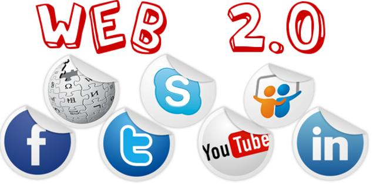
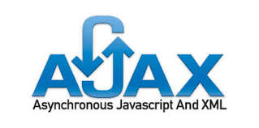
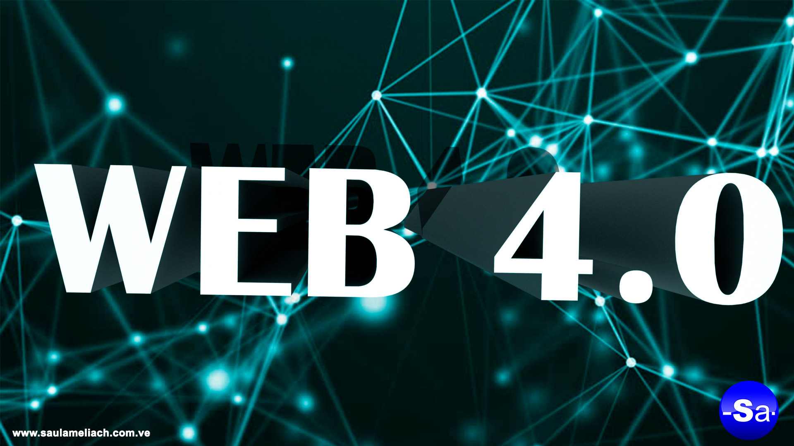

Personas conectándose a personas, la inteligencia colectiva como centro de información y la Web es sintáctica.

2004 Creación de Facebook.
Es un servicio de redes y medios sociales en línea estadounidense con sede en Menlo Park, California.
2005 Creación de la Tecnologia AJAX.
Asynchronous JavaScript And XML, es una técnica de desarrollo web para crear aplicaciones interactivas o RIA.

2006 Lanzamiento de Amazon Elastic Compute Cloud (Amazon EC2).
Parte central de la plataforma de cómputo en la nube de la empresa Amazon.com denominada Amazon Web Services.
2009 Lanzamiento de NodeJS.
Entorno en tiempo de ejecución multiplataforma, de código abierto, para la capa del servidor basado en el lenguaje de programación JavaScript.
Era de la WEB 3.0
2010 WEB 3.0
Aplicaciones Web conectándose a aplicaciones Web, las personas siguen siendo el centro de la información y la Web es semántica.
2014 Lanzamiento de HTML5.
Es la quinta revisión importante del lenguaje básico de la World Wide Web, HTML.
Era de la WEB 4.0
2015 WEB 4.0
Personas conectándose con Personas y aplicaciones Web de forma ubicua, se añaden tecnologías como la Inteligencia Artificial, la Voz como vehículo de intercomunicación para formar una Web Total.

2016 Lanzamiento de Angular.
Framework para aplicaciones web desarrollado en TypeScript. Se utiliza para crear y mantener aplicaciones web de una sola página.